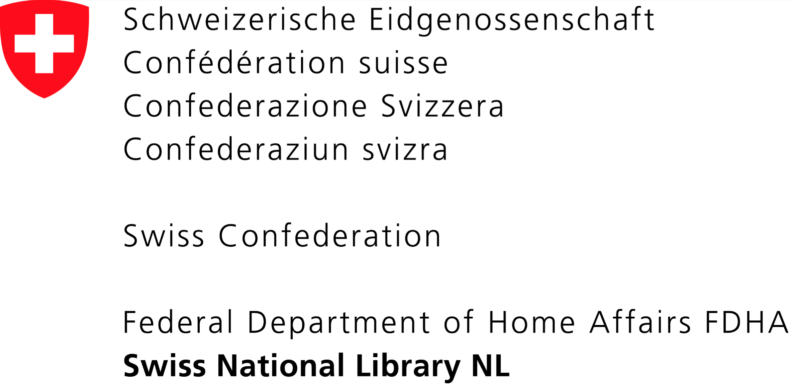
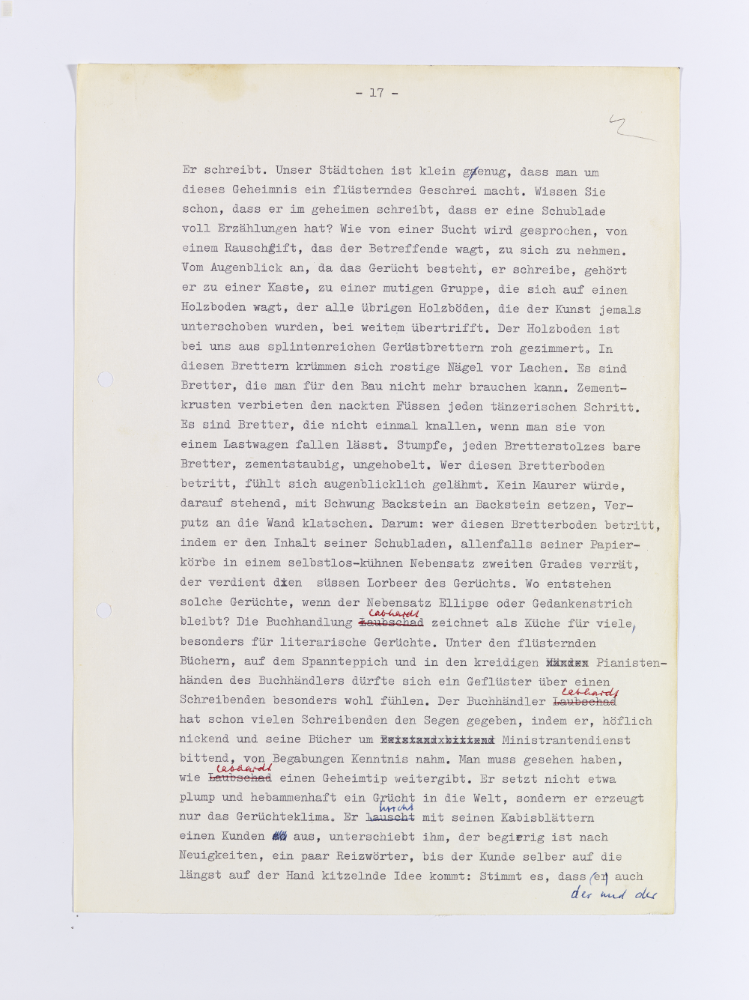
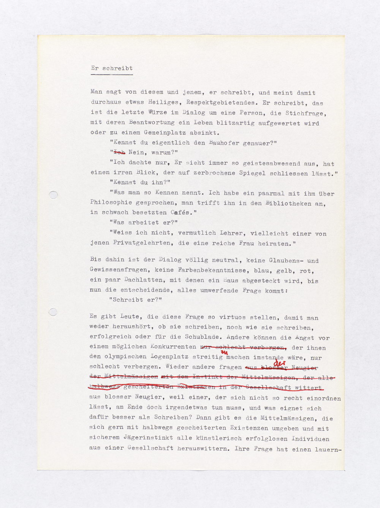

name: Titelseite class: center, center <hr style="height:10px; visibility:hidden;" /> ## Digitale Edition von Hermann Burgers *Lokalbericht* Magnus Wieland, Schweizerisches Literaturarchiv Simon Zumsteg, Zürich<br/><br/> <span style="opacity: 0.7;">*Zukunftsatelier: Literatur & Digitalität*</span><br/><br/> <span style="opacity: 0.7;">39. Solothurner Literaturtage, 27. Mai 2017</span> <hr style="height:0px; visibility:hidden;" /> http://www.lokalbericht.ch | http://purl.org/lokalbericht .bottomElementLeft[] .bottomElementRight[] .footElement[.left[<img style="max-height: 25px;" src="images/SNF.png" alt="Logo SNF">]] <!-- background-image: url(images/ErSchreibt.jpg) --> --- name: Ueberblick # Überblick .spaced[ 1. [Hermann Burger](#Autor) und seine [Poetologie](#Romanhandwerk) 1. [Dossier génétique](#StemmatischerUeberblick) 1. Das [Editionsprojekt](#Editionsprojekt) 1. [Digitale Edition](#lokalbericht.ch) * [Makrogenese](#Makrogenetisch) <!-- 1. [Ausgewählte Probleme](#Stolpersteine) --> <!-- * [Datenstruktur (TEI)](#DokumentTextzentrierung) --> <!-- * [Textgenetik: Mikroebene](#Mikrogenetisch1) --> <!-- * [Textgenetik: Makroebene](#Makrogenetisch) --> <!-- 1. [Nachhaltigkeitsaspekte](#Nachhaltigkeit) --> <!-- 1. [Technologien](#Technologie) --> 1. [Diskussion](#Diskussion) <!--1. [Literatur](#Literatur)--> ] <!--<a href="http://uni-koeln.de/~pdaengel/lokalbericht-pr/annex/annex.html#1" style="font-size: small;" target="_blank">Annex</a>--> --- name: Postkarte background-image: url(images/vogt.png) background-size: contain class: middle, center .footElementLeft2[Walter Vogt an Hermann Burger, 31. Mai 1981. <br/> In: Nachlass Hermann Burger, Schweizerisches Literaturarchiv Bern (SLA).] --- name: Autor background-image: url(images/Burger1.jpg) class: bottom, center ### Hermann Burger 1942 – 1989 # [Der Schriftsteller](#Ueberblick) .footElementCenter[© Hermann und Matthias Burger] --- name: Calascino1 background-image: url(images/LD.FOTOCAL0.0010.png) background-size: contain .horizontalElementCalascino-1a[Calascino sopra Gadero] .horizontalElementCalascino-1b[Juli/August 1970] .horizontalElementCalascino-1c[Günter Grass: *Die Blechtrommel*] .horizontalElementCalascino-1d[*Aargauer Tagblatt*] --- name: Blechtrommel <div class="blechtrommel2a">.</div> <div class="blechtrommel1a">.</div> --- name: Calascino2 background-image: url(images/LD.FOTOCAL0.0010.png) background-size: contain .horizontalElementCalascino-1a[Calascino sopra Gadero] .horizontalElementCalascino-1b[Juli/August 1970] .horizontalElementCalascino-1e[Hermes Media 3] --- name: Maschinenwechsel background-image: url(images/LB.TEIL1.0100.png) .headElementLeft[Typoskript *Lokalbericht*, S. 10 (o.D., SLA, Nachlass Hermann Burger, Schachtel 05, Sig. A-01-b)] <div class="hermesquittung">.</div> --- name: Romanhandwerk background-image: url(images/AT.ROMANHAND0.0010.png) background-size: contain .horizontalElementRomanhandwerk[.blockquote[ Das Romanhandwerk ist ein Puzzle-Spiel, man beginnt mit dem Anfertigen kleiner Einzelteile, malt ein paar gelungene Details, ohne auch nur eine Ahnung vom Ganzen zu haben. Mit der Zeit ergibt sich das grosse Bild, und dann geht man auf die Suche nach den fehlenden Teilen.]] .footElementLeft[Typoskript *Romanhandwerk* (o.D., SLA, Nachlass Hermann Burger, Schachtel 03, Sig. A-01-a)] --- name: Lokalbericht background-image: url(images/LB.TEIL1.0760.png) background-size: contain .horizontalElementLokalbericht[.blockquote[ Der Lokalredaktor Barzel ist in meinen Augen der glücklichste, weil unbewussteste Schriftsteller der Welt. Er trägt ein riesiges Mosaik aus kleinsten, buntesten Steinchen zusammen[,] ohne an die Illusion eines Gesamtplanes zu glauben.]] .footElementLeft[Typoskript *Lokalbericht* (o.D., SLA, Nachlass Hermann Burger, Schachtel 05, Sig. A-01-b)] --- name: Inhaltsübersicht background-image: url(images/LB.INHALTUETS1.0010.png) background-size: contain .horizontalElementBarzel[ ] .footElementRight[Typoskript *Inhaltsübersicht* (o.D., in: SLA, Nachlass Hermann Burger)] --- name: StemmatischerUeberblick background-image: url(images/LB_Stemma_20160830.png) background-size: contain # [*Dossier génétique*](#Ueberblick) .footElementRight[http://purl.org/lokalbericht/dossier] -- name: Editionsprojekt2 background-image: url(images/LB_Stemma_Illusion_20160830.png) --- name: Editionsprojekt # [Das Editionsprojekt](#Ueberblick) - 178 Romantyposkriptseiten - hauptsächlich einseitig beschrieben - wenig hand- und maschinenschriftliche Korrekturen - *Avant textes*: viele Vorstufen der 'Mosaiksteine' - insgesamt rund 900 Dokumente - umfangreiche Kontextmaterialien (Zeitungsseiten, Briefe, Schemata u. m.) --- - Hybrid-Edition mit digitalem Schwerpunkt - Faksimile - diplomatisch<!-- -topographisch -->e Transkriptionen - Lesefassung - Kommentar - Druckausgabe (illustrierte Lesefassung mit ausführlichem Überblickskommentar) --- name: Editionsprojekt background-image: url(images/LB_Print.png) class: top # [Das Editionsprojekt](#Ueberblick) .horizontalElementTeam[ **Projektleitung**: PD Dr. Irmgard Wirtz, Leiterin SLA **Philologie**: Dr. Simon Zumsteg und Dr. Magnus Wieland (SLA) **Beratung**: Dr. Patrick Sahle, Dr. Franz Fischer, Peter Dängeli (CCeH) **Technische Realisierung**: Peter Dängeli, Christian Theisen, Bernhard Strecker (CCeH) **Projektdauer**: 2013 – 2016 ] --- name: lokalbericht.ch background-image: url(images/LB_Lokalbericht.png) background-size: contain # [Digitale Edition](#Ueberblick) --- name: Makrogenetisch # [Makrogenese](#Ueberblick) <!-- # [#3](#Ueberblick): Textgenetik: Makroebene --> <!-- Verfolgter Ansatz: --> Verknüpfung auf Blattebene über den Identifikator des Blattes, wobei der genetische Vorläufer an erster Stelle und die späteren Verarbeitungen dahinter gereiht werden: ```xml <linkGrp xml:id="macrolinkGrp_00006" targFunc="goal source(s)" type="geneticPath"> <link target="#AT.ERSCHREIBT1.0010 #LB.TEIL1.0170 #LB.TEIL1.0190" xml:id="macrolinkGrp_00006_1"/> </linkGrp> <linkGrp xml:id="macrolinkGrp_00007" targFunc="goal source(s)" type="geneticPath"> <link target="#AT.ERSCHREIBT1.0020 #LB.TEIL2.1100 #LB.TEIL3.2040" xml:id="macrolinkGrp_00007_1"/> </linkGrp> ``` <!-- <img src="images/LB.TEIL2.1460.png" class="jump" style="position: absolute; top: 325px; /*background:rgba(1,1,1,.5); */ color: white; padding: 15px 15px; left: 468px; width: 400px; -webkit-transform: rotate(10deg); -moz-transform: rotate(10deg); -ms-transform: rotate(10deg); -o-transform: rotate(10deg); transform: rotate(10deg);" title="Teil I, S. 146"/> --> <img src="images/LB.TEIL1.0190.png" class="jump" style="position: absolute; top: 335px; /*background:rgba(1,1,1,.5); */ color: white; padding: 15px 15px; left: 430px; width: 400px; -webkit-transform: rotate(-12deg); -moz-transform: rotate(-12deg); -ms-transform: rotate(-12deg); -o-transform: rotate(-12deg); transform: rotate(-12deg);" title="Teil I, S. 19"/>   --- name: Digitale Edition background-image: url(images/LB_ErSchreibt_Teil1a.png) background-size: contain .lokalbericht-ch-nav[] .lokalbericht-ch-corenav[] .lokalbericht-ch-corel[] .lokalbericht-ch-corer[] .lokalbericht-ch-navr[] .lokalbericht-ch-quot[] <a class="lokalbericht-ch-visnav" href="http://www.lokalbericht.ch/synopsis/AT.ERSCHREIBT1.0010-t/LB.TEIL1.0170-t#lb-birdseye" target="_blank"></a> .footElementLeft[<a href="http://www.lokalbericht.ch/synopsis/AT.ERSCHREIBT1.0010-t/LB.TEIL1.0170-t" target="_blank">lokalbericht.ch/synopsis/AT.ERSCHREIBT1.0010-t/LB.TEIL1.0170-t</a>] --- name: Diskussion layout: false background-image: url(images/ErSchreibt.jpg) #Vielen Dank für die Aufmerksamkeit